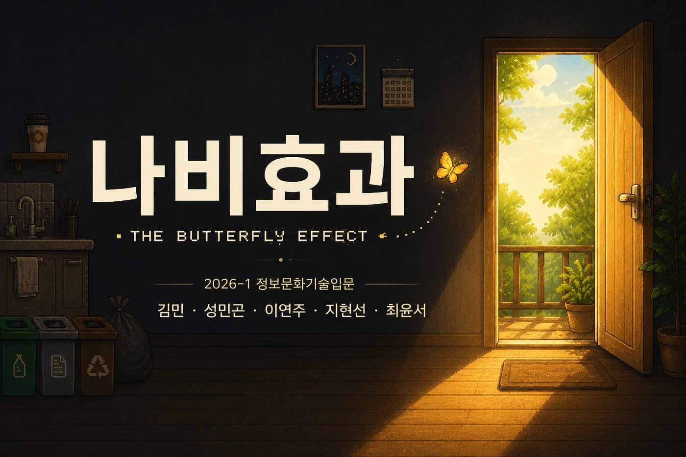
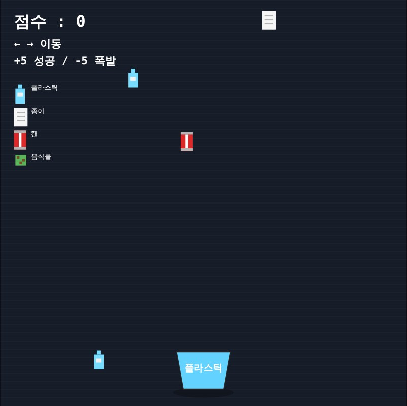
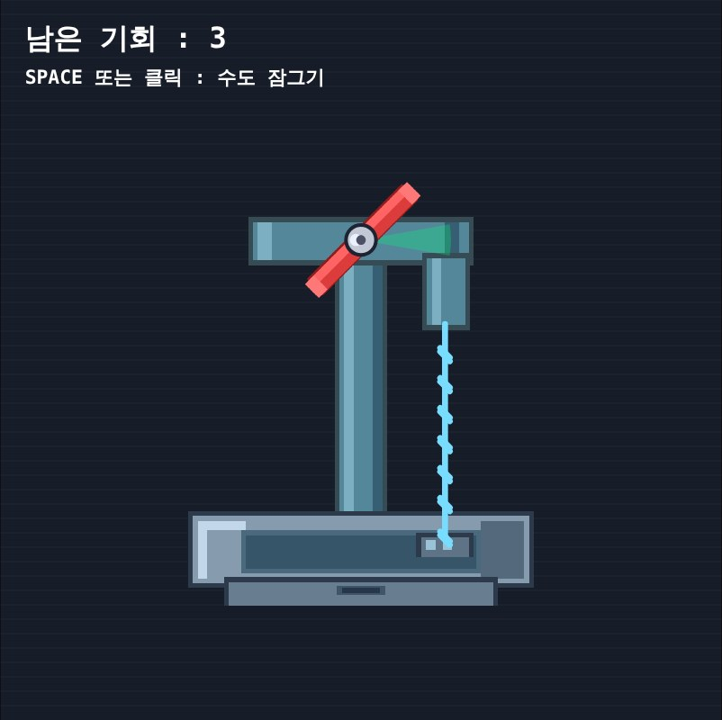
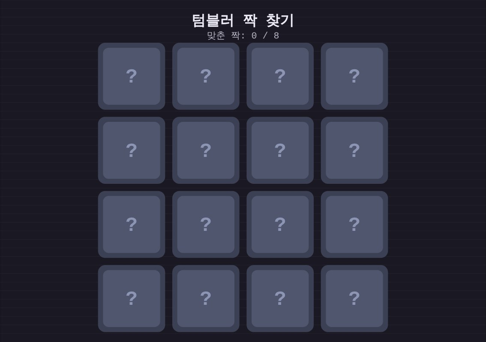
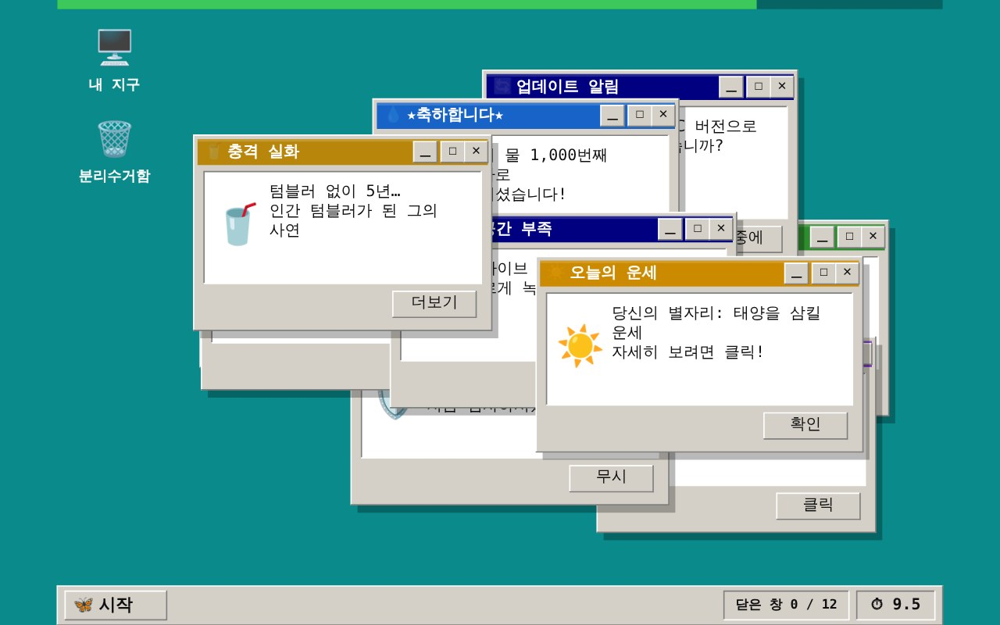
빙하가 녹는 이야기는 다른 세상 이야기처럼 느껴집니다. 그래서 설거지, 분리수거처럼 매일 하는 행동 속에서 환경 문제의 원인과 결과를 플레이어가 직접 찾아내도록 방탈출 게임으로 만들었습니다.
평소 지나쳤던 환경 문제를 다시 생각해 보게 됐다
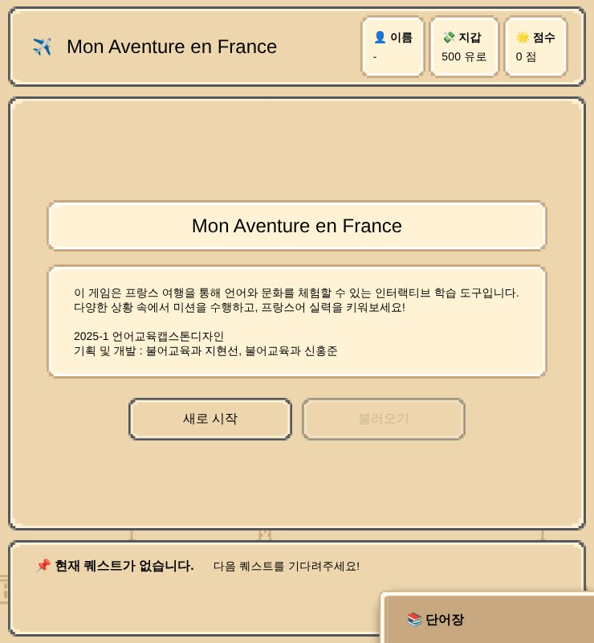
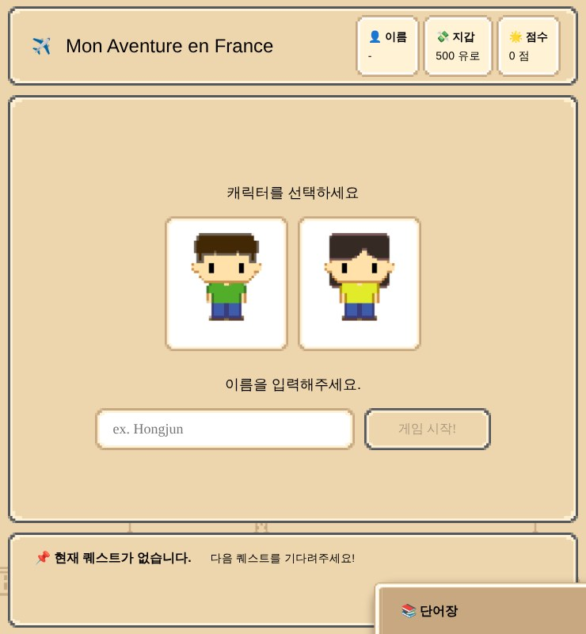
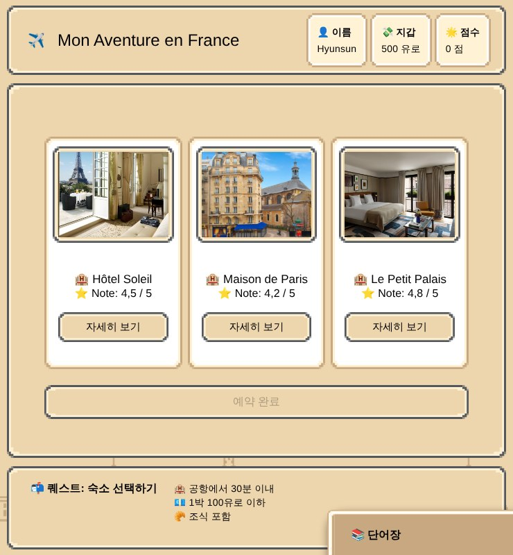
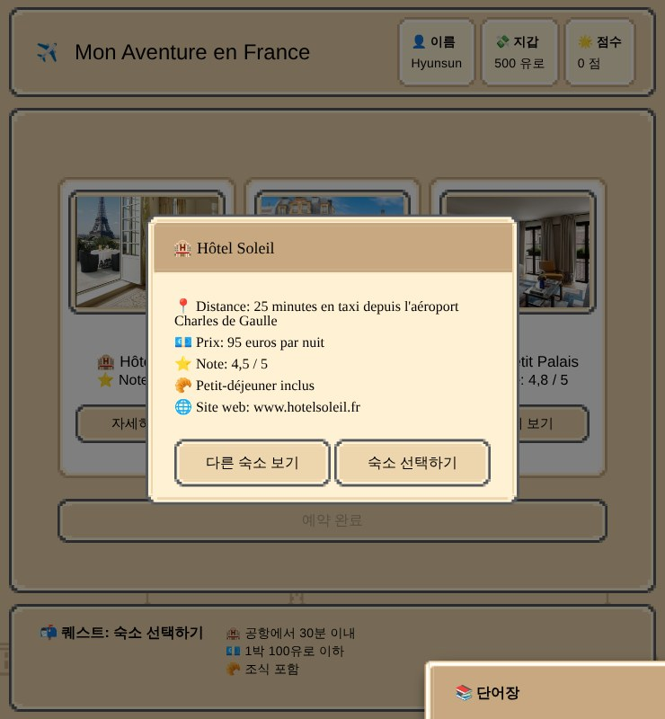
교재 속 표현을 길 찾기, 숙소 예약 같은 여행 속 과업으로 바꿔, 가상의 프랑스 여행을 하며 언어와 문화를 익히도록 설계했습니다.
전문가 6인 평가에서 자유도와 플레이 타임이 가장 낮았습니다. 선택권이 없는 구조가 원인이라고 보고 세이브·로드와 시나리오 모듈화를 기획했고, 전문가가 언급하지 않은 캐릭터 선택 기능도 더했습니다.
학습자 27명 평가에서 사용자 경험 영역 4.48점으로 가장 높은 점수를 받았습니다.
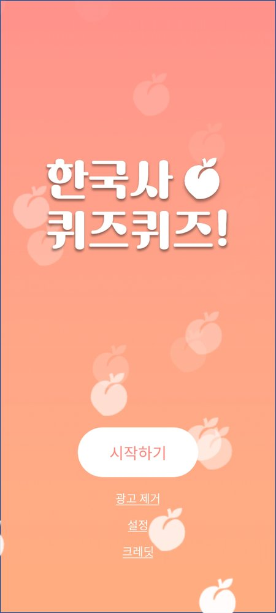
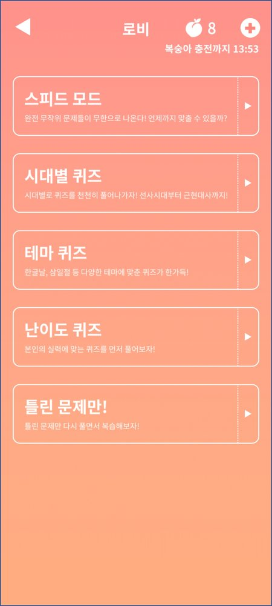
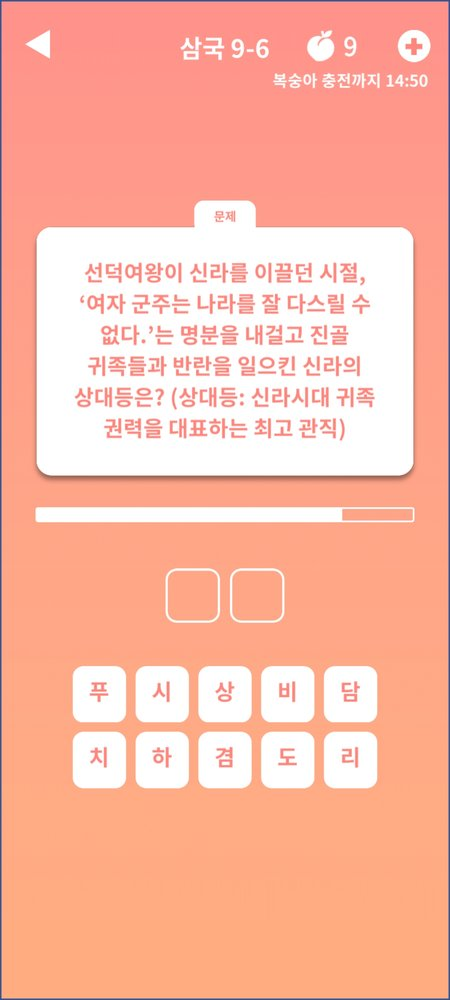
사람들은 왜 역사 예능은 재밌어하면서 수업은 지루해할까?
인물을 둘러싼 이야기를 먼저 들려준 뒤 그 인물을 맞히게 했습니다. 오른쪽 화면처럼 비담의 난 이야기를 읽고 비담을 찾는 식입니다.
구글 플레이 출시, 약 8천 회 다운로드 (총 설치 7,570회, 2025년 1월 기준)
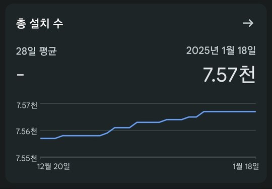